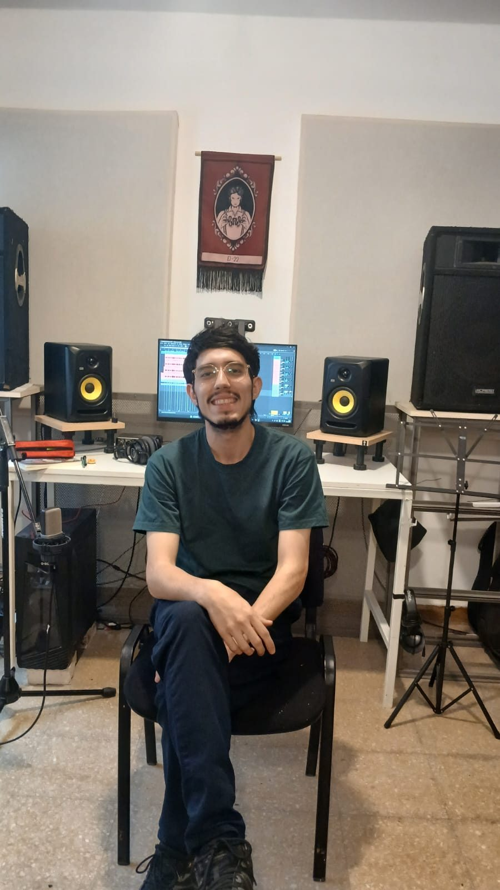

“Es un disco que hice con mis amigos”
Fer Cruza, músico, compositor, guitarrista y productor musical, habló con Apagón Urbano sobre sus inicios en la música, sobre “Mi boca una canción”, su primer disco de canciones propias, y sobre La Noche Encendida, un ciclo de cantautores y poetas cordobeses que organiza en La Hojarasca Libros junto a otros colegas.

Fer Cruza creció en Villa El Libertador y empezó a tocar con sus tíos en la banda de folklore La Cruza. Hoy graba y produce a otros artistas. Está finalizando sus estudios en la Universidad Nacional de Villa María (UNVM) y en julio presentó su disco solista, que es parte de su proyecto final de tesis de grado.
La entrevista se llevó a cabo el viernes 23 de octubre en su estudio de grabación, entre monitores, consolas, instrumentos, muchos cuadros que rodean la sala y su compu, que aún tenía la sesión abierta de alguna toma. Fer habla despacio y va hilando sus ideas en una charla amena y descontracturada, mientras está atento a recibir a un estudiante que iba a llegar pronto y a armar el mate.
Al preguntarle sobre el origen de su música y de dónde nace el oficio de hacer canciones, fue inevitable recordar su paso por “La Cruza VL”, banda en la que participaba junto a sus tíos Martín, Gonchi y Marcos Mamonde. Fer dijo que no viene de una familia directa de músicos, porque “esa etiqueta viene más de padres a hijos”, explica. Fer se reclina como recordando escenas y relata: “Tengo tres tíos que empezaron a estudiar guitarra en el barrio, ellos armaron una banda de folklore y con los años empezaron a escribir sus canciones. Yo me sumé a mis 15 años y ellos empezaron a incitarme a escribir porque estaba bueno, no por otra cosa”. Y agrega: “Así se me despertó la curiosidad de qué era lo que yo tenía para decir”.
Un DVD de rock
Teníamos curiosidad de saber qué se escuchaba en su casa. Cruza nos cuenta que se escuchaba mucho rock nacional, sobre todo Charly García. “El folklore llegó después, en la adolescencia”, agrega. Y nos cuenta sobre un recuerdo especial que guarda: un DVD de rock de principios de los 80 que tenía su mamá. “Ahí yo conocí, por ejemplo, a Spinetta, Los Abuelos de la Nada, León Gieco y a Piero, que hace poco falleció”, rememora con cariño.
Indagamos sobre su opinión acerca de la escena cultural local. Al respecto, Cruza nos comenta que en su camino desde el folklore a la canción hizo muchos amigos a los que escucha. El cantautor pone mucho énfasis en el valor de la gente que escribe y canta sus propias canciones, y reconoce a esta ciudad como un nodo muy prolífico de canciones nuevas y artistas emergentes. Para escuchar, recomienda el disco de Lara Pía, una cantautora pampeana, y el de Julián Torti, de Bell Ville. “En este tiempo de tanto cover elijo mirar los caminos que cuestan un poco más, los de quienes se animan a traer nuevas canciones”, dice.
Mi boca una canción
El disco salió en mayo y se presentó en vivo en julio. Para Fer, el disco tiene un doble significado: además de ser su primer disco de canciones propias, “que no es poco”, bromea, es su trabajo final de la carrera de Composición en la UNVM, de la que está pronto a recibirse.
Se mudó a Villa María en 2019. Ya escribía, pero la facultad le cambió la cabeza. “Al llegar a la universidad hay un montón de mundos que se te abren, al conocer otros músicos, otras formas de pensar la música”, enfatiza Cruza. De todas las canciones que escribió en esos años eligió siete, y esas son las que están en el disco.

“Es un disco que hice con mis amigos. Eso es lo más lindo, lo que yo quiero que quede reflejado”, insiste él. Enumera con cariño a todas las personas que lo acompañaron en ese proyecto: Luciano De La Rosa, con quien grabó pianos; Juan Murúa, que grabó bajos y además produjo el disco; Nico Pérez, que participa en un feat; su tío Martín Mamonde; Pancho Miranda; su compañera Aldana Campra, y Seba Palacios, que masterizó todo el material.
Le preguntamos al cantautor si hubo alguna canción que le costó mostrar y confiesa: “Sí, ‘Niña no despiertes más’ se llama, es el tema 6 del disco. Nos costó grabarla, es un poco popera”. Y nos cuenta que tanto él como Juan Murúa estaban más en el ámbito del folklore, y esto era algo diferente. “La tuvimos que grabar muchas veces, no era nuestro fuerte”, admite entre risas.
En esas siete canciones, Fer buscó mostrar la persona que es o que quiere ser, las cosas que siente, su visión del mundo y “la ventana de mi habitación”, que fue de donde nació todo. El disco está disponible en todas las plataformas, entre ellas YouTube.
La Noche Encendida
La Noche Encendida es un ciclo musical y poético que comenzó el año pasado, con entrada libre y a la gorra. Se lleva a cabo en La Hojarasca, una reconocida librería del centro de la ciudad que los fines de semana, según explica, “se disfraza de casa cultural”. Fer describe el lugar con fuerte querencia y reconoce su enorme valor como uno de los pocos lugares de la ciudad que sobreviven en una actualidad que golpea tanto a la economía y a la cultura.
Él cuenta que la idea era generar un encuentro entre distintos ecosistemas de la canción cordobesa: gente que escribe hace rato, que es de la facu, de La Colmena o de otras procedencias del circuito artístico de la ciudad, y también poetas que se animaron a la música. Nos cuenta que con el tiempo el formato se consolidó: en cada edición hay dos cantautores o cantautoras radicados en Córdoba y una lectura de poesía. Y agrega: “El fin es ampliar los mundos de las artes de quienes habitamos Córdoba”.
“Detrás de este ciclo hay un montón de trabajo y de ganas”, afirma, y nos cuenta que este año lograron hacer una edición cada mes, y que muchas veces esto implica la decisión de dejar los proyectos individuales para construir algo por y para la comunidad. Luego menciona a las personas que están detrás de todo para que los espectadores disfruten del evento: Aldana Campra, que está a cargo de las redes y la difusión, y Paulina y Santi, gestores de La Hojarasca. El músico nos cuenta que antes de cada fecha se reúnen a debatir qué propuestas pueden funcionar juntas. “A veces nos equivocamos, pero otras veces las propuestas a las que no les tenemos fe de que combinen después funcionan muy bien”, reconoce.
Antes de cerrar la charla, Fer nos cuenta que la próxima y última edición del año de La Noche Encendida se llevará a cabo el viernes 13 de noviembre, con Coty Chávez y Sabri Gallegos en la música, y la lectura de poesía a cargo de Gabriela Estofan. La entrada es libre y a la gorra, pero hay que reservar, porque el espacio puede recibir a 40 o 50 personas. “Simplemente con un mensajito al Instagram de La Noche Encendida, les guardamos el lugar”, concluye Cruza, mientras se despide con calidez porque viene llegando su estudiante de guitarra. El Instagram del ciclo es @noche.encendida.cba.